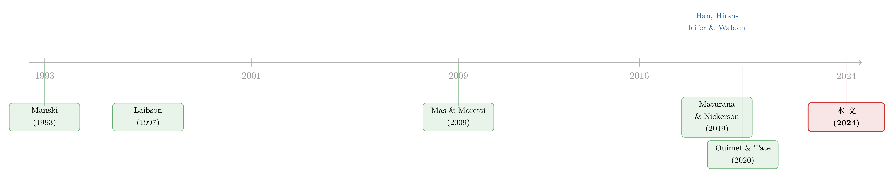

你不会去模仿邻居，但你会模仿一个你永远见不到的「同类」
本文读的是 D'Acunto, Rossi & Weber (2024, Journal of Financial Economics)：作者借一款叫 Status Money 的记账 App，把「同伴效应」中最难单独拎出来的那一根线——信息渠道——干净地分离了出来。用户看到「和自己人口特征相似的匿名同类」花了多少钱之后，会向他们的花销靠拢；而且靠拢是不对称的：12 个月内，超支者补平了与同类差距的 17%，欠支者只补平了 5%。
1 引言：一个被研究了三十年，却始终摘不干净的问题
家庭储蓄太少，是个老问题。很多人到退休那天，攒下的钱根本撑不起退休前的生活（Banks et al., 1998；Lusardi and Mitchell, 2007）。钱不够固然是约束，但作者一上来就提醒我们：除了「没钱」，还有一层更隐蔽的东西——人们根本不知道自己该花多少、该攒多少。于是大家退而求其次，去模仿「跟我差不多的人」，仿佛别人的选择里藏着关于「最优消费」的答案。
这就引出了那个被研究了三十年的概念：同伴效应 (peer effects)。你周围的人花钱大手大脚，你也跟着大手大脚；你同事开始定投，你也心痒痒。问题是——这到底是为什么？
经济学家很早就意识到，「你的选择和同伴的选择高度相关」这个现象，背后至少藏着三股力量，而它们彼此纠缠、极难拆开：
- 共同冲击 (common shocks)：你和同伴同涨同跌，也许只是因为你们一起赶上了同一场油价上涨、同一次降息。谁也没在模仿谁。
- 社会压力 (social pressure / peer pressure)：你知道邻居在看着你，于是为了不被当成「败家子」，你收敛了花销。你改变行为，是为了别人怎么看你。
- 信息渠道 (information channel)：你把同伴的选择当成一条有用的信息——「既然跟我一样的人都这么花，那大概这才是合理的水平」——于是你调整了自己的选择。
第三股力量，才是这篇论文真正想抓的那条鱼。
这三股力量的纠缠，正是 Manski (1993) 那篇经典的「反射问题 (reflection problem)」所刻画的识别困境：当你只看到「同伴的行为」和「我的行为」相关，你无法判断究竟是谁在影响谁，也无法分辨这相关到底来自模仿、共同环境，还是社会约束。
2 一个被「设计」出来的干净实验场
接着，一个自然的问题是：要把信息渠道单独摘出来，需要一个什么样的环境？
理想中的环境应该满足三个苛刻条件：第一，同伴是匿名的，你不知道他们是谁，他们也永远看不到你怎么花钱——这样就没有社会压力的空间；第二，你看到的同伴信息，不是和你同一时刻产生的——这样共同冲击就无从解释你们的相关性;第三，不同用户面对的同伴信息,信息含量有高有低——这样我们才能检验「人们是不是真的把它当信息在用」。
作者找到的这个场，叫 Status Money。它是一款美国的记账类金融科技 (FinTech) App，核心功能有两个:一是把你所有的银行账户、信用卡、投资账户聚合起来,让你看到自己完整的资产负债表;二是——这才是关键——告诉你,和你人口特征相似的一群「同类」(peers),每月花了多少钱。
但这个「同类」有几个极其讲究的设定：
- 这些同类的花销数据,是从 App 之外的一大批、代表全美人口的、账户级交易数据里众包 (crowdsource) 汇总出来的。你看到的是一个匿名群体的平均花销,你不认识他们中的任何一个人,他们也永远不会知道你看到数据后改没改。社会压力,出局。
- 这批同伴的花销信息是静态的,定格在
2017 年 7 月;而用户自己的花销,是从2017 年 8 月一直观测到样本结束的2019 年 1 月。换句话说,用户和同伴根本不在同一时间做消费决策。任何「大家一起遭遇的冲击」,都无法解释二者的相关。共同冲击,出局。
剩下的,就只有信息渠道了。
3 一张原始数据图,先把一半故事讲完
然后,作者甩出了一张几乎不需要任何计量模型的原始数据图(论文 Fig. 1),一张分箱散点图 (binned scatterplot)。
横轴,是用户在注册前 30 天里,自己的花销相对于同伴平均花销的差距,标准化成单位标准差。我们可以把这个「与同伴的距离」写成一个朴素的定义:
$$ \text{dist}_i = \frac{s_i^{pre} - \bar{s}^{peer}_i}{\sigma} $$
差距为正,说明你注册前花得比同类多(超支者, overspender);为负,说明你花得比同类少(欠支者, underspender)。纵轴,则是注册后三个月相对注册前三个月、月度美元花销的平均变化(已经回归掉了注册月份的季节性)。20,679 名用户被分进 80 个箱,每个点约 250 人。
这张图透露了三件事,而且每一件都干净得让人意外:
- 第一,所有人都向同伴靠拢。 不管你原来花得多还是少,注册后你都朝同伴的水平移动。
- 第二,差距越大,调整越大。 距离与花销变化是单调相关的——离同伴越远,你后续的修正越猛。
- 第三,反应是不对称的。 在与同伴距离绝对值相同的两侧,超支者削减花销的幅度,大于欠支者增加花销的幅度。作者还专门估了「内生门限回归 (endogenous threshold regression)」,确认这条折线的拐点恰恰落在「与同伴距离为零」处——它不是一条直线,而是在同伴水平上有个扭折 (kink)。
这个静态的不对称,在动态上同样成立:超支者和欠支者在注册后的 12 个月里,都在持续向同伴靠拢,但超支者补平了 17% 的差距,欠支者只补平了 5%。这个不对称,后面会成为整篇文章理论落点的核心。
4 但真正关键的一步:怎么排除「均值回归」和「内生选择」
一张漂亮的相关图,会立刻招来两个致命的质疑,作者也心知肚明。
第一个质疑是均值回归 (mean reversion)。 注册前花得特别多的人,也许只是那段时间碰巧有笔大开销(买了台冰箱、修了次车),之后自然会回落到日常水平——这种回落看起来很像「向同伴靠拢」,但其实跟同伴信息毫无关系。
作者的回应分两层。其一,直接控制用户注册前的花销水平,甚至改用注册前两个月、三个月的花销来计算「与同伴的距离」,结论纹丝不动——把注册前几周的异常开销排除掉,效应依然在。其二,也是更巧妙的一层:动态形态对不上。如果是均值回归,效应应该是「一次性回落、随后衰减」;但数据里的反应是随时间逐渐累积、越来越强的——这是学习与逐步调整的形状,不是回归均值的形状。作者诚实地承认:花销中确实存在均值回归,他们不否认它存在,只是论证它与本文结论无关。
第二个质疑更狠:用户到底在对什么做反应? App 上不止有同伴花销,还有「全美消费者平均花销」、还有你自己的平均收入。万一用户其实是在锚定别的数字呢?
作者的处理堪称这篇论文的点睛之笔:他们专挑那些同伴信息和其他信息预测出相反方向的用户来看。结果是,用户的行为始终跟着同伴花销走,而不是跟着「全美平均」走。更妙的是,这恰好和早年那些「没找到同伴信息效应」的研究(如 Beshears et al., 2015)对上了话——当你提供的是「全体美国人平均」这种人口构成过于宽泛、对个人毫无信息量的对照组时,确实没人理它。信息渠道的前提,是这条信息对你而言真的有信息量。
5 工具变量:被门限规则「准随机」分配的同伴
到这里,叙事出现了反转:即便排除了均值回归,「我先想好了要改变花销、然后才去下载这个 App」这类内生选择仍然挥之不去。于是作者祭出工具变量 (instrumental variable, IV)。
IV 的弹药,来自平台一个不起眼的设计细节:每个同伴组必须至少包含 5000 个底层观测。平台根据年龄、收入、所在地及类型、信用分、住房类型这几个维度把你匹配到一个预设的同伴组,但用户完全不知道匹配规则。这意味着:两个在所有可观测维度上都长得几乎一样的用户,可能仅仅因为踩在某条门限的两侧,就被分到了花销均值不同的同伴组里。
关键的检验是:那些最终被分进不同同伴组的相似用户,他们注册前的花销水平在统计上无法区分。也就是说,「被分到哪个同伴组」对用户而言近乎随机,而且因为规则不公开,用户也无法通过谎报人口特征来「操纵」自己进哪一组、来回避关于自己的坏消息。
IV 的结论与基准一致:在所有可观测维度(包括注册前花销)上都相似的用户,会向他们各自被分到的同伴组的不同花销均值靠拢。 作者还用安慰剂 IV (placebo IV) 和一组证伪检验 (falsification tests) 加固了这个结论。
这套「靠门限规则制造准随机分配」的思路,在公司金融和信用市场里其实有大量同源应用——本质上是断点/门限附近的局部随机化。读者若对「门限两侧近乎随机」这类识别感兴趣,可以顺带看看博客里写过的《一门高中理财课,能让金融犯罪少三成?》,那是断点回归的另一个干净例子。
6 信息含量越高,反应越大:这才是「信息渠道」的指纹
但工具变量只能证明「用户在对同伴信息做反应」。要证明用户是把它当作信息——而不是机械地锚定一个屏幕上的数字——还需要最后一击。
这一击,来自「信息含量 (informativeness)」的横截面差异。前面说的 5000 观测门限,会让不同用户的同伴组贴合精度不同:一个住在纽约市区、人口特征恰好凑得满 5000 个城市同类的用户,会被匹配到一个很精准的同伴组;而另一个用户为了凑满 5000 人,可能不得不把同伴范围放宽到「全纽约州」(地点类型显示为「All」)。收入区间的宽窄也是同理——区间越宽,对照越不精准。同伴组的规模本身,也带来信息精度的变化。
作者据此设计了异质性检验:被匹配到更精准、信息含量更高同伴组的用户,反应大得多;而被匹配到模糊、信息含量低同伴组的用户,几乎不动。 这一步至关重要,因为「平台设计」「看到一个数字」这些其他渠道对所有用户都一样活跃、被自动控制住了;唯一变化的,就是同伴信号的信息量。
这条「信息量越高、反应越大」的规律,正是信息渠道的指纹——人们不是在锚定一个数字,而是只有当这个数字真的贴合自己时,才把它当成行动的依据。
7 外部有效性:一个不提「同伴」二字的 RCT
故事还剩一个尾巴。能选择用 Status Money 的人,本身可能就对「自己 vs 同伴」的差距格外敏感——这叫自选择 (self-selection),它让我们没法把结论推广到普通美国人身上。
于是作者做了一件很硬核的事:跑了一个随机对照试验 (randomized controlled trial, RCT),在一个代表性的美国人群里招募受试者,招募时只字不提同伴、同伴观测或家庭金融。沿着消费储蓄文献的做法(Parker and Souleles, 2019),他们先测出受试者面对一笔意外退款的边际消费倾向 (marginal propensity to consume, MPC);然后告诉受试者「和你同一收入档的人」的 MPC 是多少;再测一次他的 MPC。这是个被试内 (within-subject) 设计。
结果和 Status Money 用户惊人地一致:所有人都对同伴信息做出反应,而且同样不对称——超支者的反应强于欠支者。 更进一步,作者发现性别、婚姻状况、孩子数量,乃至风险厌恶、耐心程度这些通常和消费态度挂钩的维度,都不能系统性地解释反应的差异——这又反过来削弱了「基准结论只是自选择产物」的担忧。
关于「测 MPC、把意外之财翻译成消费」这条线,博客里写过的《想清楚一笔意外之财,是要花脑力的——有限规划期限下的消费之谜》是个有意思的对照:那篇讲的是人们处理一笔意外收入时的认知成本,与本文「人们缺乏关于最优消费的信息」恰好是同一枚硬币的两面。
8 这个「不对称」,到底意味着什么
把整篇文章收束起来,真正的核心其实只有一个词:不对称。超支者补平差距的速度(\(17\%\)),是欠支者(\(5\%\))的三倍多。为什么?
作者把它接到了可见性偏差 (visibility bias) 的理论上(Han, Hirshleifer, and Walden, 2019)。这套理论的逻辑大致是:在日常生活里,消费比储蓄更「可见」——你看得到别人买的车、住的房、吃的饭,却看不到他们悄悄存进账户的钱。于是人们对周围人「花了多少」的印象被系统性地放大,误以为大家都花得很凶,从而自己也跟着过度消费。
如果世界真是这样,那么当 Status Money 第一次给所有人提供了一个关于真实储蓄/真实花销的、无偏的信号时,会发生什么?那些原本被「大家都很能花」的错觉推着过度消费的人(超支者),会受到最大的冲击——因为他们的先验被纠正得最厉害,所以收敛最猛;而欠支者本来就没被这种错觉误导,信号对他们的修正自然就小。不对称,正是可见性偏差理论的一个可检验推论。 这也是为什么作者说,他们的全套实证结果可以被「过度消费的信息理论」一以贯之地解释。
作者非常克制地强调了自己不主张什么:他们不声称 App 给的数字精确等于同伴的真实花销,不声称分组规则是最优的,更不做任何福利判断——向同伴靠拢未必让你过得更好。但有一个温和的政策含义浮了出来:既然「给一个人口特征精准对标的群体的花销信息」能抑制过度消费,那么有针对性的同伴信息,或许能成为一种低成本的、基于沟通的总量消费管理工具(D'Acunto, Hoang, and Weber, 2022)。
9 文献脉络
把这条线捋一捋,会看到一个清晰的演进。
最早,Manski (1993) 把同伴效应识别的根本困难——反射问题——讲清楚了:相关不等于影响,而影响里又混着模仿、共同环境和社会约束。此后很长时间,实证文献的主战场就是「如何用巧妙的设计绕过反射问题」。

接着是一批用真实环境拆解渠道的工作。Mas and Moretti (2009) 在超市收银员的「同事在场」里量出了职场同伴效应;Allcott (2011) 与 Allcott and Rogers (2014) 借 Opower 实验,给家庭寄去「邻居用了多少电」的信息,发现高耗能家庭会削减用电——但这里的削减,究竟是「学到了最优用电量」(信息渠道),还是「怕下次被邻居比下去」(社会压力),始终难以分清。再往后,Bursztyn et al. (2014)、Maturana and Nickerson (2019)、Ouimet and Tate (2020)、Agarwal et al. (2021) 各自提出能更好分离信息渠道的设定。这条「职场/熟人同伴效应」的脉络,博客里写过的《创业会「传染」吗?——但它只在同类人之间传染》就是它的当代延续。
而本文(2024)的位置,是在这条线的末端补上了最干净的一块拼图:它的设定从构造上就排除了共同冲击和社会压力(匿名、异时、无社交),又靠信息含量的横截面变化坐实了「人们真的把同伴选择当信息」。再叠加可见性偏差理论(Han, Hirshleifer, and Walden, 2019)对不对称的解释,信息渠道这条鱼,总算被单独摘了出来。
10 评论与延伸(Q&A + 研究方向)
(a) 几个可能的疑问
Q:本文说的「信息渠道」,和「锚定效应」到底有什么区别?
区别就在那个信息含量检验。如果用户只是机械地锚定屏幕上的数字,那么无论同伴组精不精准,反应都该差不多。但数据显示:同伴组贴合得越精准,反应越大;模糊的几乎不动。这说明用户在评估这个数字对自己有多大参考价值,而不是被动锚定——这正是「把它当信息用」与「单纯锚定」的分水岭。
Q:静态的同伴信息(定格在 2017 年 7 月),会不会本身就过时、不可信,从而低估了效应?
这反而是优点。正因为同伴信息是静态、异时的,它才在构造上排除了共同冲击——用户和同伴不在同一时间做决策。至于「过时」,作者要识别的是信息渠道是否存在,而非这条信息是否精确。退一步说,若信息因过时而打了折扣,那也只会让估出的效应偏保守。
Q:IV 的「准随机分配」真的可信吗?用户会不会暗中操纵自己进哪个组?
可信度的关键有两点:其一,匹配规则不对用户公开,用户无从知道谎报某个特征会把自己推进哪个组;其二,作者直接验证了——最终被分进不同同伴组的相似用户,注册前花销水平在统计上无法区分。再加上安慰剂 IV 和一组证伪检验,操纵的故事很难站住。
Q:为什么早年 Beshears et al. (2015) 等研究没找到同伴信息的效应,本文却找到了?
因为对照组的信息量不同。本文明确显示:当提供的是「全体美国人平均」这种人口构成过宽、对个人没有信息量的对照时,本文样本里同样没人理它。早年研究恰恰常用这类宽泛对照。所以这不是矛盾,而是同一条规律的两面——信息渠道只在信号真有信息量时才启动。
Q:那个 17% vs 5% 的不对称,会不会只是「超支的人天然更容易削减」这种机械现象?
作者用 RCT 回应了这一点。在一个完全不提「同伴」、被试内设计的代表性人群实验里,同样的不对称重现了;而且性别、婚姻、子女数、风险厌恶、耐心这些和消费态度相关的维度,都不能系统性解释反应差异。这把「不对称只是某类人群特征的副产品」这一解释挤压得很小,留下的是可见性偏差这类信息理论。
Q:这篇文章有没有福利含义?向同伴靠拢是好事吗?
作者明确说没有福利判断。向同伴靠拢未必提高福利——欠支者增加消费、超支者削减消费,孰优孰劣取决于他们各自的真实最优,而这是本文不观测、也不声称知道的。文章给的只是一个温和的总量政策线索:有针对性的同伴信息或许能在加总意义上抑制过度消费。
(b) 几个可能的研究问题与提案
1. 把「同伴信息」搬到公司债/信用市场的散户端。 【经济故事】零售债券或债基投资者同样缺乏「我的同类配置了多少信用风险」的信息。若给他们提供一个匿名、人口/财富特征对标的「同类信用敞口」信号,他们会不会也向同类靠拢?可见性偏差在「风险敞口」这种本就不可见的维度上,可能比在消费上更强。 【可行性】中。需要一个能观测散户债券/债基持仓的平台数据(如某券商或机器人投顾的明细),并复制本文「信息含量横截面差异 + 门限准随机分配」的识别。难点在于找到愿意提供数据、且具备类似分组机制的平台。
2. 同伴信息对流动性的总量影响。 【经济故事】如果同伴信息能让一群人同步调整某类资产的买卖(比如同时减持某类债券),那它在个体层面的「信息」就可能在总量层面变成「同向交易」,反而冲击市场流动性。信息渠道在微观上是去偏差的,在宏观上却可能制造拥挤。 【可行性】低到中。需要把个体层面的信息推送与资产层面的成交/价差关联起来,识别上很难把「信息推送导致的同向交易」与其他需求冲击分开。更现实的是先在实验室/RCT 里检验同步性是否存在。
3. 不对称是否依赖于信号方向被「框定」为社会规范。 【经济故事】本文里「节俭」隐含是社会规范,超支者面对的是「向下纠正」的压力。如果在另一个框架里把高消费框定为规范(如某些奢侈消费群体),不对称会不会反转?这能进一步检验可见性偏差,还是单纯的损失厌恶。 【可行性】高。这是一个标准的 survey/RCT 设计,只需在被试内实验里随机化信号的「规范方向」与框定措辞,本文的 RCT 模板可直接复用。
4. 外资/跨境同伴信息与本地消费储蓄。 【经济故事】当一个新兴市场的家庭第一次看到「发达国家同收入档人群的储蓄率」时,会不会把它当成关于「最优储蓄」的信息而调整?这把信息渠道接到了跨境层面,机制上同样是无偏信号纠正先验。 【可行性】中到低。需要一个跨境运营、且对不同国家用户展示可比同伴信息的金融科技平台数据,这类数据稀缺;识别上还需处理汇率、制度差异带来的混淆。
参考文献
Manski, C. F. (1993). Identification of endogenous social effects: The reflection problem. Review of Economic Studies 60(3), 531–542.
Mas, A., & Moretti, E. (2009). Peers at work. American Economic Review 99(1), 112–145.
Lusardi, A., & Mitchell, O. S. (2007). Baby boomer retirement security: The roles of planning, financial literacy, and housing wealth. Journal of Monetary Economics 54(1), 205–224.
Laibson, D. (1997). Golden eggs and hyperbolic discounting. Quarterly Journal of Economics 112(2), 443–478.
Olafsson, A., & Pagel, M. (2018). The liquid hand-to-mouth: Evidence from personal finance management software. Review of Financial Studies 31(11), 4398–4446.
Maturana, G., & Nickerson, J. (2019). Teachers teaching teachers: The role of workplace peer effects in financial decisions. Review of Financial Studies 32(10), 3920–3957.
Ouimet, P., & Tate, G. (2020). Learning from coworkers: Peer effects on individual investment decisions. Journal of Finance 75(1), 133–172.
Parker, J. A., & Souleles, N. S. (2019). Reported effects versus revealed-preference estimates: Evidence from the propensity to spend tax rebates. American Economic Review: Insights 1(3), 273–290.
D'Acunto, F., Hoang, D., & Weber, M. (2022). Managing households' expectations with unconventional policies. Review of Financial Studies 35(4), 1597–1642.
D'Acunto, F., Rossi, A. G., & Weber, M. (2024). Crowdsourcing peer information to change spending behavior. Journal of Financial Economics 157, 103858.